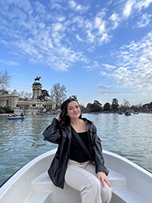

About Me:
My name is Jessica Healy and I am currently a senior at Syracuse University studying Accounting and Information Management and Technology. A few things I value are family, friends, and of course, food. During my junior year, I was fortunate enough to study abroad in Madrid for 3 months. I learned many things and tried various types of foods. Traveling around Europe taught me the importance of stepping outside of your comfort zone and one way I learned to do this was trying new foods. All photos and recommendations included on the page were visited by me and taken by me. Traveling in new cities can be overwheling, so I hope that these recommendations make traveling a bit more comforting.